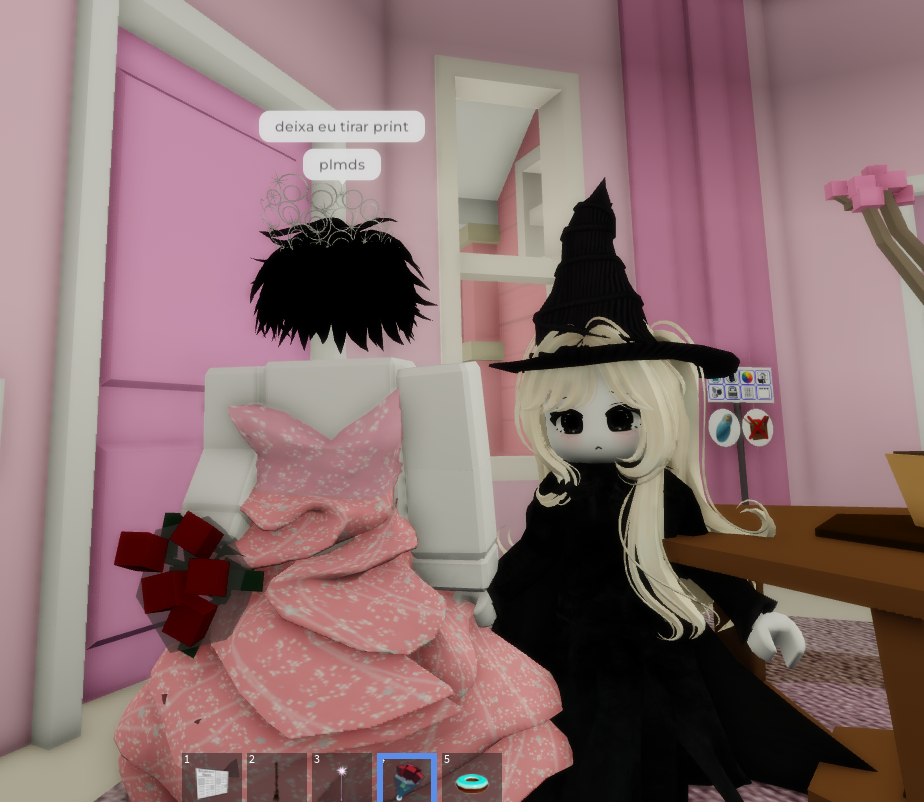
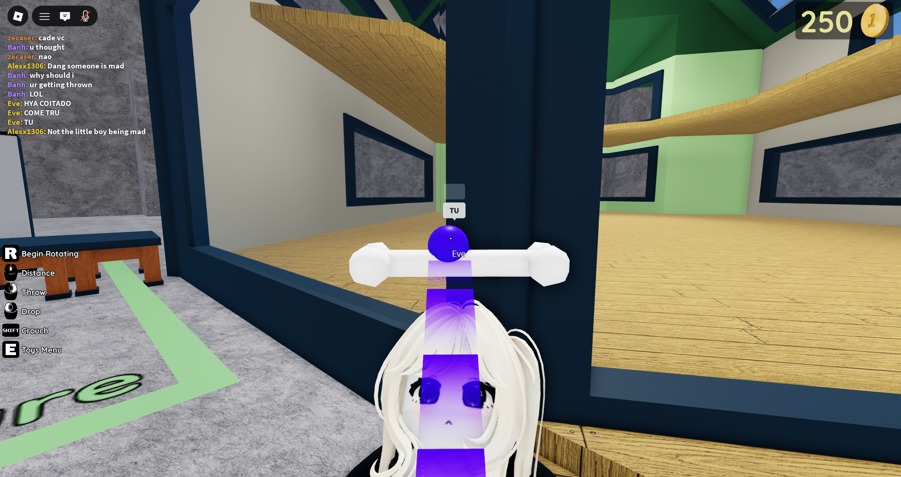
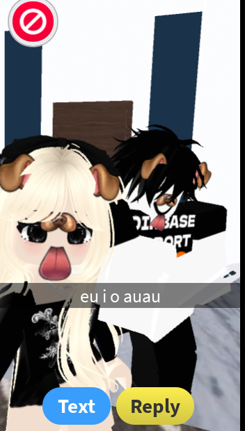
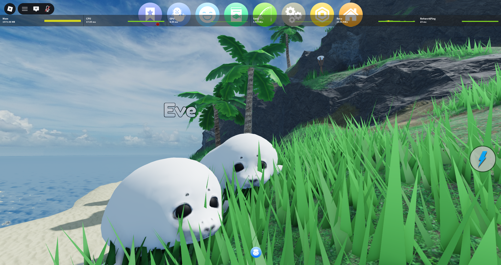

O nosso para sempre começou nesse dia...
E desde então, cada segundo ao seu lado e a melhor coisa que acontece na minha vida.
Estamos juntos há
O tempo passa, mas o que sinto por você só cresce.
Nossa história
Os momentos que marcaram a nossa jornada.

O dia em que eu pedi em voce em amoro
Além do mais, voce me fez literalmente amar muito depois de perceber o como voce era insistente e tudo q me alegrava

Primeira coisa juntos
Lembro dessa merda como se fosse hoje, nos jogando em call e tu me fazendo fazer tanta merda contigo que ate minha irmã entrou e estragou tudo, mas foi a minha primeira coisa que eu aceitei, muito obrigado por isso
Primeira merda juntos
PQP KKKKKKKKKKKKKKKKKKKKKKKKKKKK, me deu uma saudades do krl quando eu brincava contigo sem nenhum preconceito foi como achar uma segunda alma minha pra entender como é uma brincadeira de verdade, voce nesses ultimos tempos que estive contigo (infelizmente) me fez sentir uma coisa que eu nunca pensei sentir por alguem
Nosso mural
Cada foto, uma lembrança que guardo com carinho.



Uma carta para você
Escrevi algumas palavras que vêm direto do coração.